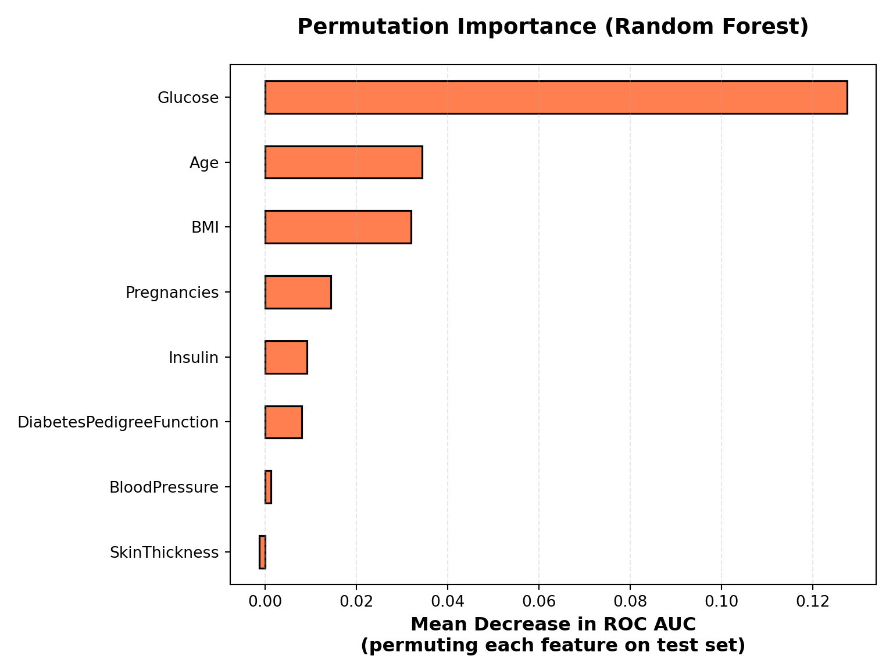
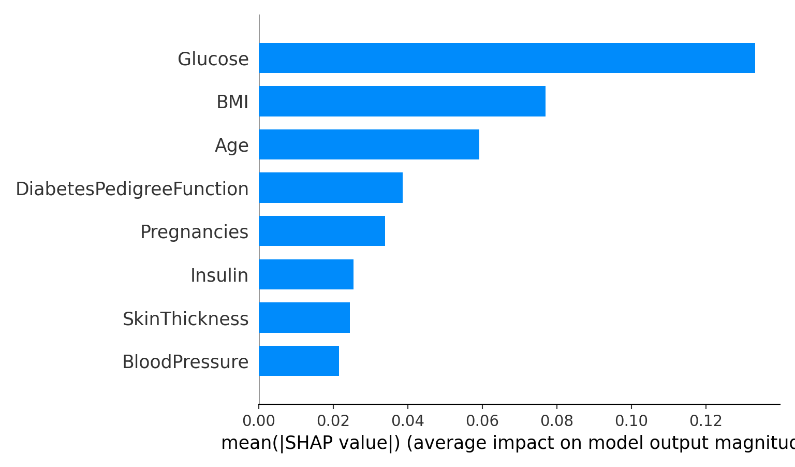
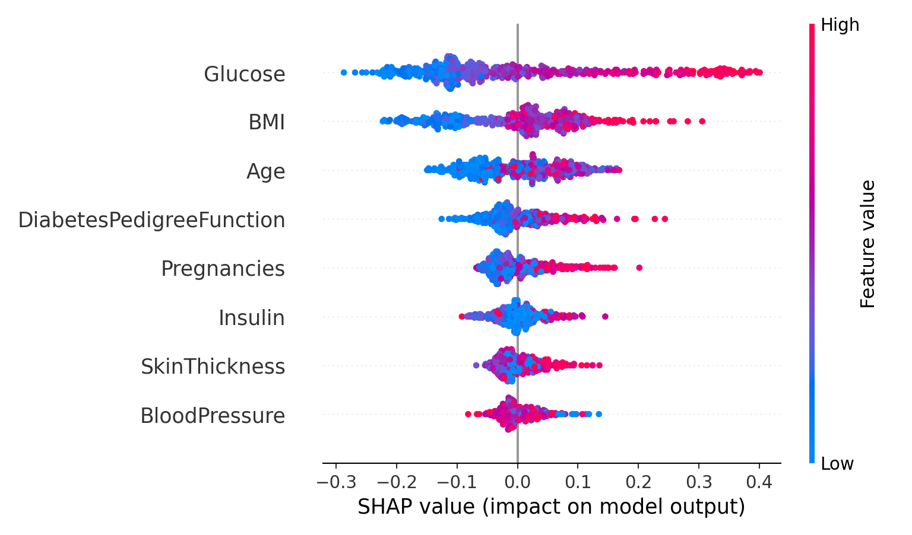

This notebook demonstrates multiple approaches to feature importance interpretation in machine learning:
Random Forest variable importance (impurity-based): Model-based measure based on Gini impurity reduction
Permutation importance: Model-agnostic measure based on performance degradation when features are shuffled
SHAP values: Game-theoretic approach providing both global and local feature attributions
Logistic regression coefficients: Simple interpretable model outputs
Why multiple methods? Different importance measures can yield different rankings because they answer different questions: - Impurity-based: Which features help the model split the data most effectively? - Permutation: Which features, when removed (via permutation), cause the largest performance drop? - SHAP: How does each feature contribute to each individual prediction, on average? - Coefficients: How is my model exactly working
Setup
Code
import pandas as pdimport numpy as npimport matplotlib.pyplot as pltimport seaborn as snsfrom sklearn.model_selection import train_test_splitfrom sklearn.ensemble import RandomForestClassifierfrom sklearn.linear_model import LogisticRegressionfrom sklearn.metrics import roc_auc_score, classification_reportfrom sklearn.inspection import permutation_importanceimport shap# Set styleplt.style.use('default')sns.set_palette("husl")RANDOM_STATE =123print("Libraries loaded successfully!")
Libraries loaded successfully!
Code
print(f"SHAP version: {shap.__version__}")
SHAP version: 0.48.0
1. Load the Pima Indians Diabetes Dataset
The Pima Indians Diabetes dataset is a classic benchmark dataset containing medical measurements from Pima Indian women. The task is to predict diabetes (binary classification) based on features such as glucose levels, BMI, blood pressure, and insulin levels.
Key considerations for interpretation: - Some features may have missing values encoded as zeros (e.g., glucose=0 likely indicates missing data) - Features are on different scales, which can affect importance measures - The dataset is relatively small (768 samples), so results should be interpreted with caution regarding generalizability
Random Forest is an ensemble method that combines multiple decision trees. Each tree is trained on a bootstrap sample of the data, and predictions are made by averaging across trees.
Why Random Forest for importance analysis? - Provides built-in importance measures (impurity-based) - Handles non-linear relationships and interactions - Relatively robust to overfitting - Compatible with SHAP’s TreeExplainer for exact Shapley value computation
Model evaluation: We use ROC AUC as it’s appropriate for imbalanced classification tasks and provides a threshold-independent measure of model performance.
In a Jupyter environment, please rerun this cell to show the HTML representation or trust the notebook. On GitHub, the HTML representation is unable to render, please try loading this page with nbviewer.org.
3. Random Forest Variable Importance (Impurity-based)
Impurity-based importance (also called Gini importance or mean decrease in impurity) measures how much each feature contributes to reducing node impurity across all trees in the forest.
How it works: 1. For each split in each tree, calculate the reduction in Gini impurity 2. Weight this reduction by the number of samples reaching that node 3. Sum across all splits for each feature 4. Average across all trees
Interpretation: - Higher values indicate features that create more “pure” splits (better separation of classes) - This is a model-intrinsic measure: it reflects how the model uses features, not necessarily their true predictive power - Limitation: Can be biased toward features with many categories or high cardinality
When to use: Good for understanding which features the model relies on most for making splits, but may not reflect true feature importance for prediction.
Different models will have different model-based importance metrics vip package in R
Permutation importance is a model-agnostic method that measures feature importance by evaluating how much model performance decreases when a feature’s values are randomly shuffled.
How it works: 1. Train the model and record baseline performance (e.g., ROC AUC) 2. For each feature: - Randomly permute (shuffle) that feature’s values - Re-evaluate model performance with the permuted feature - Calculate the decrease in performance 3. Repeat multiple times (e.g., 20) and average the results
Interpretation: - Higher values indicate features whose removal (via permutation) causes larger performance degradation - This measures true predictive importance rather than how the model uses features - Advantage: Works with any model and directly measures impact on predictions - Note: Permutation importance can be negative if a feature adds noise; this suggests the model may be overfitting
When to use: Best for understanding which features are truly important for prediction, especially when comparing across different model types.
Code
# Permutation importanceprint("Computing permutation importance (this may take a moment)...")
Computing permutation importance (this may take a moment)...
Code
result = permutation_importance( rf, X_test, y_test, n_repeats=20, random_state=RANDOM_STATE, scoring="roc_auc", n_jobs=-1)perm_importance = pd.Series( result.importances_mean, index=feature_names).sort_values(ascending=True)print("\nPermutation Importance (Mean Decrease in ROC AUC):")
Permutation Importance (Mean Decrease in ROC AUC):
# Visualizeplt.figure(figsize=(8, 6))perm_importance.plot(kind="barh", color='coral', edgecolor='black', linewidth=1.2)plt.xlabel("Mean Decrease in ROC AUC\n(permuting each feature on test set)", fontsize=12, fontweight='bold')plt.title("Permutation Importance (Random Forest)", fontsize=14, fontweight='bold', pad=20)plt.grid(axis='x', alpha=0.3, linestyle='--')plt.tight_layout()plt.show()

5. SHAP Values with TreeExplainer
SHAP (SHapley Additive exPlanations) is a unified framework for explaining model predictions based on cooperative game theory. It provides both local (per-instance) and global (aggregated) feature attributions.
Theoretical foundation: - Based on Shapley values from cooperative game theory - Each feature’s contribution is calculated as its average marginal contribution across all possible feature combinations - SHAP values satisfy several desirable properties: - Efficiency: Sum of SHAP values equals the difference between prediction and baseline - Symmetry: Features with equal marginal contributions receive equal SHAP values - Dummy: Features that don’t affect the output have zero SHAP values - Additivity: SHAP values are additive across model components
TreeExplainer: - For tree-based models (Random Forest, XGBoost, etc.), TreeExplainer can compute exact Shapley values efficiently - Much faster than generic SHAP explainers (KernelExplainer, LinearExplainer) - Leverages the tree structure to compute values in polynomial time rather than exponential
Interpretation: - Positive SHAP value: Feature pushes prediction toward higher risk (diabetes) - Negative SHAP value: Feature pushes prediction toward lower risk (no diabetes) - Magnitude: How much the feature contributes to the prediction - Baseline (expected value): The average prediction across the training set
print(f"Expected value (baseline): {explainer.expected_value}")
Expected value (baseline): [0.65040348 0.34959652]
Code
# For binary classification, shap_values has shape (n_samples, n_features, 2)# Index 0 = class 0 (no diabetes), Index 1 = class 1 (diabetes)shap_values_pos = shap_values[:, :, 1] # SHAP values for positive class (diabetes = 1)base_value_pos = explainer.expected_value[1]print(f"\nUsing SHAP values for positive class (diabetes = 1)")
Using SHAP values for positive class (diabetes = 1)
Code
print(f"Base value (log-odds): {base_value_pos:.4f}")
Base value (log-odds): 0.3496
5.1 Global SHAP Summary: Bar Plot
The bar plot shows the mean absolute SHAP value for each feature, providing a global measure of feature importance.
Interpretation: - Features are ranked by their average absolute contribution to predictions - This is similar to permutation importance but based on Shapley values - Advantage over impurity-based: Directly measures impact on predictions, not just splits - Advantage over permutation: Provides both direction (positive/negative) and magnitude of contributions
When to use: Quick overview of which features are most important globally across all predictions.
Code
# Global SHAP bar plot: mean(|SHAP|)shap.summary_plot( shap_values_pos, X_train, plot_type="bar", show=False)plt.tight_layout()plt.show()

5.2 Global SHAP Summary: Beeswarm Plot
The beeswarm plot (also called summary plot) provides a richer view of how features contribute to predictions across all samples.
What it shows: - X-axis: SHAP value (contribution to prediction) - Y-axis: Features ranked by importance - Color: Feature value (red = high, blue = low) - Each dot: One sample’s SHAP value for that feature
Key insights: 1. Distribution: See the spread of SHAP values (some features may have consistent contributions, others variable) 2. Direction: Whether high feature values push predictions up (right) or down (left) 3. Interactions: Patterns in color can reveal interactions (e.g., high glucose only matters when BMI is also high) 4. Outliers: Identify samples with unusual feature contributions
Interpretation example: If glucose points are mostly red (high values) on the right (positive SHAP), this means high glucose consistently increases diabetes risk predictions.
Code
# Global SHAP beeswarm plotshap.summary_plot( shap_values_pos, X_train, show=False)plt.tight_layout()plt.show()

5.3 Local Explanation: Force Plot for Individual Patient
Local explanations show how each feature contributes to a single prediction, providing interpretability at the instance level.
Why local explanations matter: - Different patients may have different risk factors - Understanding why a specific patient was classified as high-risk enables personalized interventions - Helps identify which features are driving a particular prediction - Useful for model debugging and building trust with clinicians
Waterfall plot interpretation: - Base value: Average prediction across training set (baseline risk) - Each bar: Feature’s contribution (positive = increases risk, negative = decreases risk) - Final value: Sum of base value + all feature contributions = predicted probability - Bar length: Magnitude of contribution - Bar color: Direction (red = increases risk, blue = decreases risk)
Clinical application: “This patient has high diabetes risk primarily because of elevated glucose (contributes +0.15) and BMI (contributes +0.08), partially offset by good insulin sensitivity (contributes -0.05).”
Code
# Local explanation for one patienti =0# Choose any index in X_testx_i = X_test.iloc[[i]] # 1-row DataFrameshap_values_i = explainer.shap_values(x_i) # shape: (1, n_features, 2)phi_i_pos = shap_values_i[0, :, 1] # SHAP values for this instance, class 1print(f"Patient {i} from test set:")
Logistic regression provides a simple, interpretable baseline for comparison. Unlike tree-based models, logistic regression assumes linear relationships between features and the log-odds of the outcome.
Coefficient interpretation: - Positive coefficient: One-unit increase in feature increases log-odds of diabetes - Negative coefficient: One-unit increase in feature decreases log-odds of diabetes - Magnitude: Strength of the linear relationship (on log-odds scale) - Note: Coefficients are on the log-odds scale; to interpret on probability scale, use exp(coefficient) for odds ratios
Advantages: - Simple and fully interpretable - Provides statistical significance (with proper inference) - Assumes no interactions (unless explicitly modeled)
Limitations: - Cannot capture complex, non-linear interactions automatically - May underperform compared to non-linear models
When to use: As a baseline for comparison, or when interpretability and statistical inference are priorities over predictive performance.
Code
# Fit Logistic Regressionlog_reg = LogisticRegression(max_iter=1000, solver="liblinear", random_state=RANDOM_STATE)log_reg.fit(X_train, y_train)
In a Jupyter environment, please rerun this cell to show the HTML representation or trust the notebook. On GitHub, the HTML representation is unable to render, please try loading this page with nbviewer.org.
Parameters
penalty
'l2'
dual
False
tol
0.0001
C
1.0
fit_intercept
True
intercept_scaling
1
class_weight
None
random_state
123
solver
'liblinear'
max_iter
1000
multi_class
'deprecated'
verbose
0
warm_start
False
n_jobs
None
l1_ratio
None
Code
# Get coefficientscoef = pd.Series(log_reg.coef_[0], index=feature_names).sort_values(ascending=True)intercept = log_reg.intercept_[0]print(f"Logistic Regression Performance:")
Comparing different importance measures helps understand: 1. Consistency: Do methods agree on which features are important? 2. Complementarity: Do different methods reveal different aspects of feature importance? 3. Method selection: Which method is most appropriate for your use case?
Why methods may differ: - Impurity-based: Reflects how the model uses features internally (may favor high-cardinality features) - Permutation: Measures true predictive power (what happens when feature is removed) - SHAP: Average contribution to predictions (considers feature interactions and non-linearities) - Logistic coefficients: Linear relationships only (may miss non-linear patterns)
Best practices: - Use permutation importance for model-agnostic feature selection - Use SHAP for understanding individual predictions and feature interactions - Use impurity-based for understanding how tree models make decisions - Use coefficients for simple, interpretable linear relationships
Note: All measures are normalized (0-1 scale) for visual comparison, but raw values have different interpretations and should not be directly compared numerically.
This notebook demonstrates multiple approaches to understanding feature importance in machine learning models. Each method answers slightly different questions and has different strengths.
---title: "Random Forest Variable Importance and SHAP Analysis"subtitle: "Pima Indians Diabetes Dataset (Python)"format: html: code-fold: true code-tools: true toc: true toc-depth: 3---```{r, include = FALSE}library(reticulate)# one-off setup (if you haven't done it yet)# install_miniconda()##conda_create(## envname = "hds-python",## python_version = "3.11",## packages = c("numpy", "pandas", "matplotlib", "seaborn", "scikit-learn")##)use_condaenv("hds-python", required =TRUE)#py_config()#conda_install("hds-python", c("shap"))```This notebook demonstrates multiple approaches to feature importance interpretation in machine learning:1. **Random Forest variable importance (impurity-based)**: Model-based measure based on Gini impurity reduction2. **Permutation importance**: Model-agnostic measure based on performance degradation when features are shuffled3. **SHAP values**: Game-theoretic approach providing both global and local feature attributions4. **Logistic regression coefficients**: Simple interpretable model outputs**Why multiple methods?** Different importance measures can yield different rankings because they answer different questions:- **Impurity-based**: Which features help the model split the data most effectively?- **Permutation**: Which features, when removed (via permutation), cause the largest performance drop?- **SHAP**: How does each feature contribute to each individual prediction, on average?- **Coefficients**: How is my model exactly working## Setup```{python}#| echo: true#| message: false#| warning: falseimport pandas as pdimport numpy as npimport matplotlib.pyplot as pltimport seaborn as snsfrom sklearn.model_selection import train_test_splitfrom sklearn.ensemble import RandomForestClassifierfrom sklearn.linear_model import LogisticRegressionfrom sklearn.metrics import roc_auc_score, classification_reportfrom sklearn.inspection import permutation_importanceimport shap# Set styleplt.style.use('default')sns.set_palette("husl")RANDOM_STATE =123print("Libraries loaded successfully!")print(f"SHAP version: {shap.__version__}")```## 1. Load the Pima Indians Diabetes DatasetThe Pima Indians Diabetes dataset is a classic benchmark dataset containing medical measurements from Pima Indian women. The task is to predict diabetes (binary classification) based on features such as glucose levels, BMI, blood pressure, and insulin levels.**Key considerations for interpretation:**- Some features may have missing values encoded as zeros (e.g., glucose=0 likely indicates missing data)- Features are on different scales, which can affect importance measures- The dataset is relatively small (768 samples), so results should be interpreted with caution regarding generalizability```{python}#| echo: true# Load dataseturl ="https://raw.githubusercontent.com/npradaschnor/Pima-Indians-Diabetes-Dataset/master/diabetes.csv"pima = pd.read_csv(url)print(f"Dataset shape: {pima.shape}")print(f"\nColumns: {list(pima.columns)}")print(f"\nOutcome distribution:")print(pima['Outcome'].value_counts())print(f"\nDiabetes prevalence: {pima['Outcome'].mean()*100:.1f}%")pima.head()``````{python}#| echo: true# Prepare features and targetX = pima.drop(columns=["Outcome"])y = pima["Outcome"]feature_names = X.columns.tolist()print(f"Features ({len(feature_names)}): {feature_names}")print(f"\nFeature summary statistics:")X.describe()```## 2. Train/Test Split and Random Forest Model**Random Forest** is an ensemble method that combines multiple decision trees. Each tree is trained on a bootstrap sample of the data, and predictions are made by averaging across trees.**Why Random Forest for importance analysis?**- Provides built-in importance measures (impurity-based)- Handles non-linear relationships and interactions- Relatively robust to overfitting- Compatible with SHAP's TreeExplainer for exact Shapley value computation**Model evaluation:** We use ROC AUC as it's appropriate for imbalanced classification tasks and provides a threshold-independent measure of model performance.```{python}#| echo: true# Train/test splitX_train, X_test, y_train, y_test = train_test_split( X, y, test_size=0.3, random_state=RANDOM_STATE, stratify=y)print(f"Training set: {X_train.shape[0]} samples")print(f"Test set: {X_test.shape[0]} samples")print(f"Training diabetes prevalence: {y_train.mean()*100:.1f}%")print(f"Test diabetes prevalence: {y_test.mean()*100:.1f}%")``````{python}#| echo: true# Fit Random Forest Classifierrf = RandomForestClassifier( n_estimators=300, max_depth=None, min_samples_split=2, min_samples_leaf=1, random_state=RANDOM_STATE, n_jobs=-1)rf.fit(X_train, y_train)# Evaluate modely_pred_proba = rf.predict_proba(X_test)[:, 1]auc = roc_auc_score(y_test, y_pred_proba)print(f"Random Forest Model Performance:")print(f"ROC AUC: {auc:.4f}")print(f"\nClassification Report:")print(classification_report(y_test, rf.predict(X_test), target_names=['No Diabetes', 'Diabetes']))```## 3. Random Forest Variable Importance (Impurity-based)**Impurity-based importance** (also called Gini importance or mean decrease in impurity) measures how much each feature contributes to reducing node impurity across all trees in the forest.**How it works:**1. For each split in each tree, calculate the reduction in Gini impurity2. Weight this reduction by the number of samples reaching that node3. Sum across all splits for each feature4. Average across all trees**Interpretation:**- Higher values indicate features that create more "pure" splits (better separation of classes)- This is a **model-intrinsic** measure: it reflects how the model uses features, not necessarily their true predictive power- **Limitation**: Can be biased toward features with many categories or high cardinality**When to use:** Good for understanding which features the model relies on most for making splits, but may not reflect true feature importance for prediction.Different models will have different model-based importance metrics `vip` package in R```{python}#| echo: true#| fig-width: 8#| fig-height: 6# Impurity-based variable importanceimportances = rf.feature_importances_vip = pd.Series(importances, index=feature_names).sort_values(ascending=True)print("Variable Importance (Mean Decrease in Impurity):")print(vip.round(4))# Visualizeplt.figure(figsize=(8, 6))vip.plot(kind="barh", color='steelblue', edgecolor='black', linewidth=1.2)plt.xlabel("Mean Decrease in Impurity", fontsize=12, fontweight='bold')plt.title("Random Forest Variable Importance (Pima Indians Diabetes)", fontsize=14, fontweight='bold', pad=20)plt.grid(axis='x', alpha=0.3, linestyle='--')plt.tight_layout()plt.show()```## 4. Permutation Importance**Permutation importance** is a model-agnostic method that measures feature importance by evaluating how much model performance decreases when a feature's values are randomly shuffled.**How it works:**1. Train the model and record baseline performance (e.g., ROC AUC)2. For each feature: - Randomly permute (shuffle) that feature's values - Re-evaluate model performance with the permuted feature - Calculate the decrease in performance3. Repeat multiple times (e.g., 20) and average the results**Interpretation:**- Higher values indicate features whose removal (via permutation) causes larger performance degradation- This measures **true predictive importance** rather than how the model uses features- **Advantage**: Works with any model and directly measures impact on predictions- **Note**: Permutation importance can be negative if a feature adds noise; this suggests the model may be overfitting**When to use:** Best for understanding which features are truly important for prediction, especially when comparing across different model types.```{python}#| echo: true#| fig-width: 8#| fig-height: 6# Permutation importanceprint("Computing permutation importance (this may take a moment)...")result = permutation_importance( rf, X_test, y_test, n_repeats=20, random_state=RANDOM_STATE, scoring="roc_auc", n_jobs=-1)perm_importance = pd.Series( result.importances_mean, index=feature_names).sort_values(ascending=True)print("\nPermutation Importance (Mean Decrease in ROC AUC):")print(perm_importance.round(4))# Visualizeplt.figure(figsize=(8, 6))perm_importance.plot(kind="barh", color='coral', edgecolor='black', linewidth=1.2)plt.xlabel("Mean Decrease in ROC AUC\n(permuting each feature on test set)", fontsize=12, fontweight='bold')plt.title("Permutation Importance (Random Forest)", fontsize=14, fontweight='bold', pad=20)plt.grid(axis='x', alpha=0.3, linestyle='--')plt.tight_layout()plt.show()```## 5. SHAP Values with TreeExplainer**SHAP (SHapley Additive exPlanations)** is a unified framework for explaining model predictions based on cooperative game theory. It provides both local (per-instance) and global (aggregated) feature attributions.**Theoretical foundation:**- Based on **Shapley values** from cooperative game theory- Each feature's contribution is calculated as its average marginal contribution across all possible feature combinations- SHAP values satisfy several desirable properties: - **Efficiency**: Sum of SHAP values equals the difference between prediction and baseline - **Symmetry**: Features with equal marginal contributions receive equal SHAP values - **Dummy**: Features that don't affect the output have zero SHAP values - **Additivity**: SHAP values are additive across model components**TreeExplainer:**- For tree-based models (Random Forest, XGBoost, etc.), TreeExplainer can compute **exact** Shapley values efficiently- Much faster than generic SHAP explainers (KernelExplainer, LinearExplainer)- Leverages the tree structure to compute values in polynomial time rather than exponential**Interpretation:**- **Positive SHAP value**: Feature pushes prediction toward higher risk (diabetes)- **Negative SHAP value**: Feature pushes prediction toward lower risk (no diabetes)- **Magnitude**: How much the feature contributes to the prediction- **Baseline (expected value)**: The average prediction across the training set```{python}#| echo: true# Compute SHAP valuesprint("Computing SHAP values...")explainer = shap.TreeExplainer(rf)shap_values = explainer.shap_values(X_train)print(f"SHAP values shape: {shap_values.shape}")print(f"X_train shape: {X_train.shape}")print(f"Expected value (baseline): {explainer.expected_value}")# For binary classification, shap_values has shape (n_samples, n_features, 2)# Index 0 = class 0 (no diabetes), Index 1 = class 1 (diabetes)shap_values_pos = shap_values[:, :, 1] # SHAP values for positive class (diabetes = 1)base_value_pos = explainer.expected_value[1]print(f"\nUsing SHAP values for positive class (diabetes = 1)")print(f"Base value (log-odds): {base_value_pos:.4f}")```### 5.1 Global SHAP Summary: Bar PlotThe **bar plot** shows the mean absolute SHAP value for each feature, providing a global measure of feature importance.**Interpretation:**- Features are ranked by their average absolute contribution to predictions- This is similar to permutation importance but based on Shapley values- **Advantage over impurity-based**: Directly measures impact on predictions, not just splits- **Advantage over permutation**: Provides both direction (positive/negative) and magnitude of contributions**When to use:** Quick overview of which features are most important globally across all predictions.```{python}#| echo: true#| fig-width: 8#| fig-height: 6# Global SHAP bar plot: mean(|SHAP|)shap.summary_plot( shap_values_pos, X_train, plot_type="bar", show=False)plt.tight_layout()plt.show()```### 5.2 Global SHAP Summary: Beeswarm PlotThe **beeswarm plot** (also called summary plot) provides a richer view of how features contribute to predictions across all samples.**What it shows:**- **X-axis**: SHAP value (contribution to prediction)- **Y-axis**: Features ranked by importance- **Color**: Feature value (red = high, blue = low)- **Each dot**: One sample's SHAP value for that feature**Key insights:**1. **Distribution**: See the spread of SHAP values (some features may have consistent contributions, others variable)2. **Direction**: Whether high feature values push predictions up (right) or down (left)3. **Interactions**: Patterns in color can reveal interactions (e.g., high glucose only matters when BMI is also high)4. **Outliers**: Identify samples with unusual feature contributions**Interpretation example:** If glucose points are mostly red (high values) on the right (positive SHAP), this means high glucose consistently increases diabetes risk predictions.```{python}#| echo: true#| fig-width: 10#| fig-height: 8# Global SHAP beeswarm plotshap.summary_plot( shap_values_pos, X_train, show=False)plt.tight_layout()plt.show()```### 5.3 Local Explanation: Force Plot for Individual Patient**Local explanations** show how each feature contributes to a **single prediction**, providing interpretability at the instance level.**Why local explanations matter:**- Different patients may have different risk factors- Understanding why a specific patient was classified as high-risk enables personalized interventions- Helps identify which features are driving a particular prediction- Useful for model debugging and building trust with clinicians**Waterfall plot interpretation:**- **Base value**: Average prediction across training set (baseline risk)- **Each bar**: Feature's contribution (positive = increases risk, negative = decreases risk)- **Final value**: Sum of base value + all feature contributions = predicted probability- **Bar length**: Magnitude of contribution- **Bar color**: Direction (red = increases risk, blue = decreases risk)**Clinical application:** "This patient has high diabetes risk primarily because of elevated glucose (contributes +0.15) and BMI (contributes +0.08), partially offset by good insulin sensitivity (contributes -0.05)."```{python}#| echo: true#| fig-width: 10#| fig-height: 6# Local explanation for one patienti =0# Choose any index in X_testx_i = X_test.iloc[[i]] # 1-row DataFrameshap_values_i = explainer.shap_values(x_i) # shape: (1, n_features, 2)phi_i_pos = shap_values_i[0, :, 1] # SHAP values for this instance, class 1print(f"Patient {i} from test set:")print(f"Actual outcome: {'Diabetes'if y_test.iloc[i] ==1else'No Diabetes'}")print(f"Predicted probability: {rf.predict_proba(x_i)[0, 1]:.4f}")print(f"\nFeature values:")print(x_i.T)# Alternative: Waterfall plot (works better in static notebooks)shap.waterfall_plot( shap.Explanation( values=phi_i_pos, base_values=base_value_pos, data=x_i.iloc[0].values, feature_names=feature_names ), show=False)plt.tight_layout()plt.show()```## 6. Comparison: Logistic Regression Coefficients**Logistic regression** provides a simple, interpretable baseline for comparison. Unlike tree-based models, logistic regression assumes linear relationships between features and the log-odds of the outcome.**Coefficient interpretation:**- **Positive coefficient**: One-unit increase in feature increases log-odds of diabetes- **Negative coefficient**: One-unit increase in feature decreases log-odds of diabetes- **Magnitude**: Strength of the linear relationship (on log-odds scale)- **Note**: Coefficients are on the log-odds scale; to interpret on probability scale, use `exp(coefficient)` for odds ratios**Advantages:**- Simple and fully interpretable- Provides statistical significance (with proper inference)- Assumes no interactions (unless explicitly modeled)**Limitations:**- Cannot capture complex, non-linear interactions automatically- May underperform compared to non-linear models**When to use:** As a baseline for comparison, or when interpretability and statistical inference are priorities over predictive performance.```{python}#| echo: true# Fit Logistic Regressionlog_reg = LogisticRegression(max_iter=1000, solver="liblinear", random_state=RANDOM_STATE)log_reg.fit(X_train, y_train)# Get coefficientscoef = pd.Series(log_reg.coef_[0], index=feature_names).sort_values(ascending=True)intercept = log_reg.intercept_[0]print(f"Logistic Regression Performance:")y_pred_proba_lr = log_reg.predict_proba(X_test)[:, 1]auc_lr = roc_auc_score(y_test, y_pred_proba_lr)print(f"ROC AUC: {auc_lr:.4f}")print(f"\nIntercept (log-odds): {intercept:.4f}")print(f"\nCoefficients (log-odds scale):")print(coef.round(4))print("\nInterpretation:")print("Positive coefficients → higher feature values increase diabetes risk")print("Negative coefficients → higher feature values decrease diabetes risk")``````{python}#| echo: true#| fig-width: 8#| fig-height: 6# Visualize logistic regression coefficientsplt.figure(figsize=(8, 6))coef.plot(kind="barh", color='mediumseagreen', edgecolor='black', linewidth=1.2)plt.axvline(x=0, color='red', linestyle='--', alpha=0.5, linewidth=1)plt.xlabel("Coefficient (log-odds scale)", fontsize=12, fontweight='bold')plt.title("Logistic Regression Coefficients (Pima Indians Diabetes)", fontsize=14, fontweight='bold', pad=20)plt.grid(axis='x', alpha=0.3, linestyle='--')plt.tight_layout()plt.show()```## 7. Comparison of All Importance MeasuresComparing different importance measures helps understand:1. **Consistency**: Do methods agree on which features are important?2. **Complementarity**: Do different methods reveal different aspects of feature importance?3. **Method selection**: Which method is most appropriate for your use case?**Why methods may differ:**- **Impurity-based**: Reflects how the model uses features internally (may favor high-cardinality features)- **Permutation**: Measures true predictive power (what happens when feature is removed)- **SHAP**: Average contribution to predictions (considers feature interactions and non-linearities)- **Logistic coefficients**: Linear relationships only (may miss non-linear patterns)**Best practices:**- Use **permutation importance** for model-agnostic feature selection- Use **SHAP** for understanding individual predictions and feature interactions- Use **impurity-based** for understanding how tree models make decisions- Use **coefficients** for simple, interpretable linear relationships**Note:** All measures are normalized (0-1 scale) for visual comparison, but raw values have different interpretations and should not be directly compared numerically.```{python}#| echo: true#| fig-width: 10#| fig-height: 8# Normalize all importance measures for comparisonvip_norm = (vip - vip.min()) / (vip.max() - vip.min())perm_norm = (perm_importance - perm_importance.min()) / (perm_importance.max() - perm_importance.min())shap_importance = pd.Series(np.abs(shap_values_pos).mean(axis=0), index=feature_names).sort_values(ascending=True)shap_norm = (shap_importance - shap_importance.min()) / (shap_importance.max() - shap_importance.min())coef_abs = pd.Series(np.abs(coef), index=feature_names).sort_values(ascending=True)coef_norm = (coef_abs - coef_abs.min()) / (coef_abs.max() - coef_abs.min())# Create comparison dataframecomparison_df = pd.DataFrame({'RF_Impurity': vip_norm,'Permutation': perm_norm,'SHAP': shap_norm,'LogReg_Coeff': coef_norm}).sort_index()# Visualize comparisonfig, ax = plt.subplots(figsize=(10, 8))comparison_df.plot(kind='barh', ax=ax, width=0.8, edgecolor='black', linewidth=0.5)ax.set_xlabel('Normalized Importance', fontsize=12, fontweight='bold')ax.set_title('Comparison of Feature Importance Measures', fontsize=14, fontweight='bold', pad=20)ax.legend(loc='lower right', fontsize=10)ax.grid(axis='x', alpha=0.3, linestyle='--')plt.tight_layout()plt.show()print("Summary:")print("• RF Impurity: Mean decrease in Gini impurity")print("• Permutation: Mean decrease in ROC AUC when feature is permuted")print("• SHAP: Mean absolute SHAP values")print("• LogReg Coeff: Absolute logistic regression coefficients")```## SummaryThis notebook demonstrates multiple approaches to understanding feature importance in machine learning models. Each method answers slightly different questions and has different strengths.